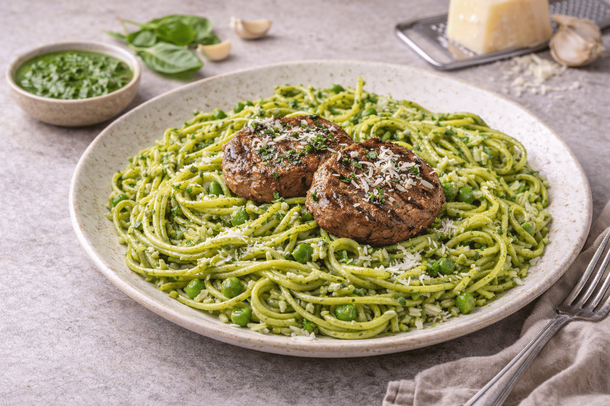

Los tallarines verdes son uno de los platos que representan la cocina casera peruana y la fusión cultural que nos caracteriza como país. Su origen está influenciado por la inmigración italiana que llegó al Perú a fines del siglo XIX, y que trajo sus recetas nativas como lo es el pesto. Al pasar los años, estas preparaciones se fueron adaptando a los ingredientes locales y al gusto peruano, incorporando la espinaca, queso fresco y la leche evaporada, dando resultado a una salsa cremosa y de un sabor más suave que la versión europea original.
En el Perú, los tallarines verdes se convirtieron en un clásico de los almuerzos familiares por la sencillez y rapidez de preparación, además de destacar por su exquisito sabor. En muchos hogares este plato se acompaña de bistec apanado o a la plancha o con milanesa de pollo, creando una versión más abundante y reconfortante. Su característico color verde intenso y el aroma inconfundible de la albahaca, los hacen una receta única y querida. Gracias a la fusión de gastronomías es que en la actualidad podemos disfrutar de una gastronomía inconfundible y con identidad que traspasa de generación en generación.